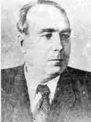

СЕНЧЕНКО Іван Юхимович (1901-1975)Справжні літературні майстри завжди з нами, вони вічно залишаються для нас живими, молодими й прекрасними, як 'їх чудові твори. Таким майстром слова є і буде для нас, красноградців, відомий український письменник, наш земляк І. Ю. Сенченко з його неповторними творами про життя селян України, про життя робітництва, про нашу Красноградщину, про її чудову природу, прої людей — простих трудівників, яких дуже любив і поважав письменник.
"Сенченко вийшов з народу і не відійшов від нього бодай на крок упродовж довгих своїх творчих років. Мабуть, важко в нашій літературі знайти письменника, що так послідовно-вперто намагався б осягнути художній зміст людської праці, письменника, який би досягнув у цьому напрямку таких висот, які судилися на долю Івана Сенченка". (П. Загребельний)
Народившись 12 лютого 1901 року, І. Ю. Сенченко належить до ровесників нашого бурхливого віку. В молодості він був і робітником, і вчителем. Прийшовши в літературу із села, з трудових надр селянства, прийшов, зрозуміло, з "селянською" темою у своїй творчості: образи людей села — найбільш знані — потреби, запити, проблеми села були йому найближчими. Ця тема — ставлення до неї, вивчення та осмислення її — так і залишилася на все його півстолітнє творче життя, але ж — не поглинула його, як це буває іноді з письменниками, що походять із селянських верств. "Ні. Ніхто інший, як саме Сенченко, одним із перших, у кожному разі — перших талановитих, підняв в українській літературі те, що ми звемо "робітничою темою" (Ю. Смолич). Перехід на робітничу тему був у Сенченка логічним розвитком допитливості автора, вміння широко й глибоко мислити. Щоб правдиво відтворити буття робітничого колективу засобами художньої літератури, проникнути у внутрішній світ робочої людини, 1. Сенченко йшов працювати на заводи, шахти. Працюючи на Харківському велозаводі, він став навіть токарем. Повертаючись із заводу чи з шахти, Сенченко дарував читачеві свої твори на робітничу тему. Це дуже цікаві оповідання, нариси, повісті та романи — "Інженерії", "Металісти", "Напередодні" та інші. У своїй творчості Сенченко неодноразово повертався творчою увагою до нашого Краснограда, до улюбленого Наталиного. Цікаве для нас те, що головних героїв творів, присвячених нашому краю, письменник називав своїми іменами. Але ніхто не побачить у цьому якусь місцеву обмеженість. Кожен його твір про рідний край відображає широкий соціальний процес, характерний для всієї Батьківщини. Згадаємо уривок з оповідання Сенченка "Кінчався вересень 1941 року" про дитинство автора: "Коли наставала пора орати, волочити, бігати за приводом кінної машини, наші батьки не могли знайти кращих погончиків у цілому світі. — Поганяй, Іванько! — і Іванько сміливо ступав на стерню своїми броньованими ногами, всіяними "курчатами" мало не до колін. Як я люблю цих маленьких погончиків! В них наша молодість, облита чистим промінням праці! Це моя Батьківщина. Такою я її люблю до безтями. Віддати її на поталу ворогові — це живцем лягти в труну, це одірвати себе від свого грунту, від своєї молодості, від батька й матері, від цього сонця, бо немає кращого сонця за те, яке зазирало у нашу колиску і викликало перші гарячі струмені поту від перших спроб праці..." Щиро любив І. Сенченко Батьківщину, рідну землю, людей, любив життя, яким би воно не було. Він писав: "Я ніколи не вимагав від життя багато, і проте, ніколи не жалкував за ним. У самому процесі життя, як би не складалося воно, я вбачав тільки те, що хороше. І як на нього жадібне моє серце! ...Все темне, все гидке я видушував з себе, з своєї душі. Хмари падали на мене, я струшував їх щоб знову понести в життя моє любляче серце". Своє любляче серце ніс Сенченко в життя своїми чудовими творами. Його "Солом'янські оповідання", "Червоноградські портрети", повісті "Савка", Фесько Кандиба" назавжди лишаться для нас великими взірцями літературної майстерності. З яким захопленням читають діти твори Сенченка присвячені їм. Це — "Паровий млин", "Діамантовий берег", "Руді вовки", "Про Олежку та його сестру Ніну" та інші. Не обійшов своєю увагою письменник і маленьких читачів. Його опрвідання "Сім господинь", "Здоровий ніс між очима та двоє вух за плечима", "Хліб святий", "Рукавичка і струмок" та інші досі радують і будуть радувати малечу Багато творів написав І. Сенченко, і всі вони світяться любов'ю автора до тих, кому він їх присвячував. Його ім'я занесено в енциклопедію світової літератури. Ось одне з оповідань для дітей. Ніхто не чув, як комар чхнув. Ішли колгоспники сіно косити понад озером. Їздовому Іванов схотілося чхнути. Ї він так чхнув, що всі жаби поховалися в воду, г Комара ледве з листочка не здуло. Спочатку Комар був злякався — чи крильця цілі. Махнув ними — ні, не пом'яті. Тоді він і каже: — Хіба ж так чхають, як той їздовий Іван? Ось я як чхну, так у Полтаві одгукнеться! І чхнув. Але косарі йшли не обертаючися, жаби на болоті спокійно гріли ся проти сонечка, а в Полтаві й пір'їнка не зворухнулася. Ніхто й не чув, як комар чхнув.